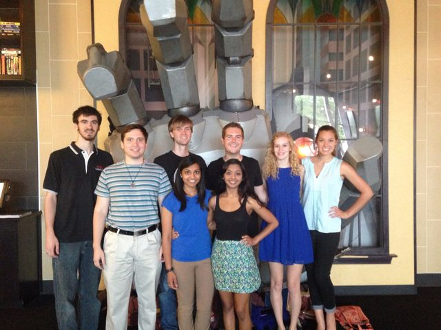
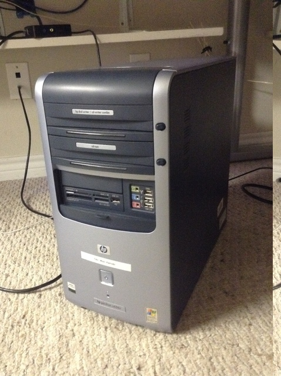
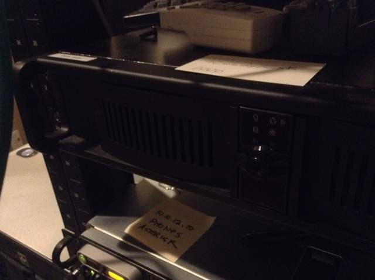

Last week was weird because I got to go off the farm for two days. My a cappella group, Novis, had a gig at the Alamo Drafthouse last Wednesday as a pre-show for the movie Pitch Perfect, so I went up to UTD for a bit. We had a good time, and the audience seemed to like us a lot! Plus, I used the faster network speeds to get a few important downloads done.

It was nice getting away from the farm, because I've been really busy around here. (You're probably all a bit tired of me saying that one.)
Monday night I installed all of the new switches, completely rerouting the network. Of course, after the install, strange things have been happening, but that can wait for when I've got my new gateway set up.
Speaking of gateways, it's not done yet. Last week's last-minute travel plans messed with my time schedule, so I'm behind for most of my projects. The maintenance computer (nicknamed Obi Wan), instead of being up last Tuesday, is now coming online tonight. The gateway (Darth Vader) might be delayed as late as Thursday. At this point, I'm almost a week behind, and I am not happy about that at all.
The left one is Obi Wan, and the right one is Darth Vader (if you can see him).
 
On a lighter note, I'll end with a story about goats. One day, when everyone was away on a video shoot, I came out of the office and heard a goat bleating. I found one just standing in the yard, looking quite lost. As soon as I stepped outside, it started following me. Eventually, I found the rest of the herd, and the two of us walked through the gate to be with the rest of the goats. By the time we got close, the rest of the herd started following me, slowly trotting behind me the whole way back to the gate. As I was walking back to the gate, I couldn't help but think that I didn't know where they were supposed to be. I certainly am not their shepherd, but they blindly followed where I led.
When Jesus looked upon the crowd and had pity, who were like "sheep without a shepherd," I imagine that's just what it looked like: a flock of people, knowing that they had no direction in life, and following the first thing that they could grab hold of. When you don't have a shepherd, it's easy to follow someone else who doesn't have any direction. Even though the goats knew who their shepherd was, they were willing to follow someone completely new.